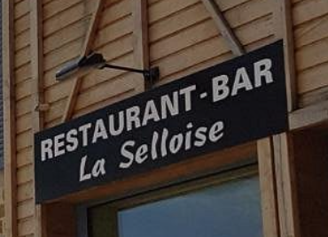
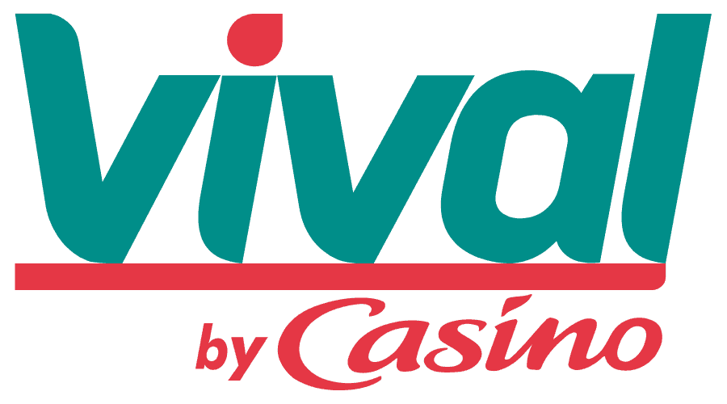

Carl Zeiss Vision France
Stagiaire et Intérimaire – Service Informatique
31 semaines en administration systèmes et réseaux chez Zeiss, incluant stages et missions intérimaires, au sein du leader mondial de l'optique de précision.
Découvrez les entreprises au sein desquelles j'ai développé mes compétences techniques et relationnelles
Stagiaire et Intérimaire – Service Informatique
31 semaines en administration systèmes et réseaux chez Zeiss, incluant stages et missions intérimaires, au sein du leader mondial de l'optique de précision.
Stagiaire – Technicien informatique
Stage au sein d'un revendeur spécialisé en informatique à Rennes, proposant la vente, l'assemblage sur mesure et la maintenance de PC fixes et portables. Participation à la préparation et au reconditionnement de PC pour la vente : assemblage, démontage, nettoyage, remplacement de composants (RAM, stockage) et installation de systèmes Windows.

Stagiaire – Service et aide en cuisine
Stage au sein d'un restaurant traditionnel : service en salle et participation à la préparation des plats (découpe de légumes, préparation des entrées et desserts, aide au dressage des assiettes).

Stagiaire – Employé de commerce
Stage en magasin de proximité : réception et déballage des colis, mise en rayon des produits, facing et participation à l'organisation de l'espace de vente.